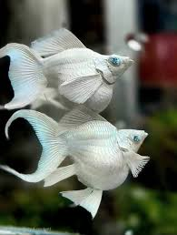

ข้อมูลพื้นฐานปลาบอลลูน

...
พื้นฐาน
ปลาบอลลูนคืออะไร
- ชื่อสามัญ: ปลาบอลลูน
- ชื่อวิทยาศาสตร์: Poecilia latipinna
- ลักษณะเด่น: ลำตัวสั้น กลม พุงป่อง
- นิสัย: ค่อนข้างสงบ เลี้ยงรวมได้
เหมาะกับใคร
กลุ่มผู้เลี้ยง
- ผู้เริ่มต้นเลี้ยงปลา
- ตู้รวม ปลานิสัยไม่ดุ
- คนที่ต้องการปลาน่ารัก ดูแลง่าย
วิธีการเลี้ยงปลาบอลลูน
ภาชนะและน้ำ
- แนะนำตู้ขนาดอย่างน้อย 12–18 นิ้วขึ้นไป
- ปลาบอลลูนชอบว่าย ต้องมีพื้นที่
- ใช้น้ำประปาพักคลอรีน
- สามารถใส่ใบหูกวางหรือน้ำหมัก + เกลือสมุทร 1 ช้อนชา
ระบบกรอง / อากาศ
- แนะนำให้มีระบบกรอง (ฟองน้ำหรือกรองแขวน)
- ควรมีอากาศตลอดเวลา
- ปลาบอลลูนกินเก่ง ขี้หนัก น้ำเสียง่าย
การป้องกันโรค
- ใช้ Methylene Blue แบบอ่อน ๆ เป็นช่วง ๆ
- อัตรา 0.5 cc ต่อน้ำ 1 ลิตร หรือ 1 หยด
- แนะนำใช้ช่วงปลาใหม่ หรือมีแผล
- เปลี่ยนน้ำ 20–30% ทุก 5–7 วัน
วิธีการรักษาปลาป่วย (ปลาบอลลูน)
- แยกปลา น้ำ 10 ลิตร ใส่อากาศ
- ใส่เกลือสมุทร 1 ช้อนชา / 10 ลิตร
- ใส่แทนนินอ่อน ๆ ไม่เข้ม
- ใช้ Methylene Blue 0.3–0.5 cc / 10 ลิตร
- งดอาหาร 2–3 วัน
- เปลี่ยนน้ำ 30–50% ทุก 2–3 วัน